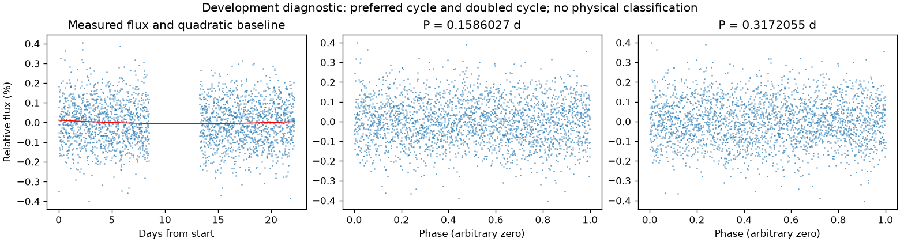
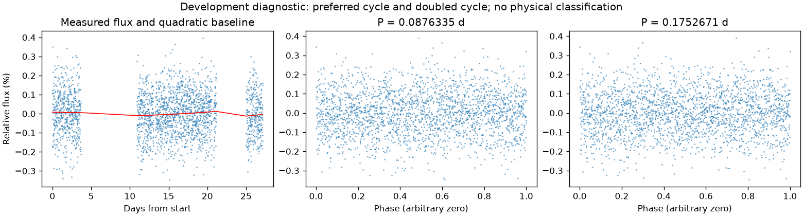

并非所有时段都支持重复变化
第二版周期：None 天；状态：not_established。

左图红线是缓慢基线；右面两图去除该基线。若未通过周期要求，两图只展示得分最高的竞争解释。
| 竞争周期（天） | 交替周期预测改善 | 两组各自改善 | 通过初筛 |
|---|---|---|---|
| 0.1586027 | -2.6% | -2.0% / -3.3% | 否 |
| 0.0797381 | -2.8% | -2.8% / -2.9% | 否 |
| 0.0794059 | -3.5% | -4.1% / -2.9% | 否 |
| 0.6424974 | -4.1% | -4.9% / -3.4% | 否 |
| 5.7609814 | -4.3% | -5.1% / -3.3% | 否 |
| 0.3182972 | -5.3% | -5.5% / -5.2% | 否 |
| 1.2818910 | -5.4% | -5.2% / -5.7% | 否 |
| 0.1591527 | -5.7% | -5.4% / -6.2% | 否 |
“预测改善”衡量用一组周期的形状预测另一组，比只有缓慢基线好多少；负数表示更差。搜索和预测共用了资料，因此这不是可信概率，也不是独立验证。
第二版周期：None 天；状态：not_established。

左图红线是缓慢基线；右面两图去除该基线。若未通过周期要求，两图只展示得分最高的竞争解释。
| 竞争周期（天） | 交替周期预测改善 | 两组各自改善 | 通过初筛 |
|---|---|---|---|
| 0.0876335 | -1.1% | -2.5% / 0.3% | 否 |
| 0.3673987 | -1.4% | -0.7% / -2.2% | 否 |
| 0.5539816 | -3.4% | -5.1% / -1.8% | 否 |
| 0.4491456 | -3.5% | -4.2% / -2.7% | 否 |
| 0.2779847 | -3.5% | -4.5% / -2.5% | 否 |
| 0.0919720 | -3.6% | -3.8% / -3.3% | 否 |
| 0.9027814 | -4.0% | -3.2% / -4.8% | 否 |
| 0.1842583 | -4.5% | -5.3% / -3.7% | 否 |
“预测改善”衡量用一组周期的形状预测另一组，比只有缓慢基线好多少；负数表示更差。搜索和预测共用了资料，因此这不是可信概率，也不是独立验证。